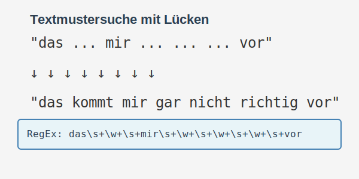
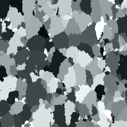

1. Runde - Bundeswettbewerb Informatik 2023/2024
Überblick zur 1. Runde
Die erste Runde des 41. Bundeswettbewerbs Informatik bietet fünf spannende Aufgaben, aus denen Teilnehmer drei auswählen und bearbeiten können. Auf dieser Seite gebe ich einen Überblick über die Aufgaben und meine Lösungsansätze.
- Zeitraum: September 2023 bis November 2023
- Aufgabenstellung: 5 Aufgaben, davon 3 zu bearbeiten
- Einreichung: Dokumentation und lauffähiger Programmcode
- Bearbeitung: Einzeln oder im Team (max. 3 Personen)
Über den Bundeswettbewerb Informatik
Der Bundeswettbewerb Informatik ist ein anspruchsvoller Programmierwettbewerb für Schülerinnen und Schüler. Er fördert die kreative Auseinandersetzung mit algorithmischen Problemen und die Entwicklung effizienter Lösungsstrategien. Der Wettbewerb wird vom Bundesministerium für Bildung und Forschung gefördert und richtet sich an Jugendliche bis 21 Jahre.
Die 41. Ausgabe des Wettbewerbs startete im September 2023 mit der ersten Runde, in der die Teilnehmer fünf anspruchsvolle Aufgaben zur Auswahl haben, von denen drei zu bearbeiten sind.
Die Aufgaben im Detail
Aufgabe 1: Störung

Bei dieser Aufgabe geht es um Textmustersuche: Alice und Bob haben das Problem, dass in ihrem Chat Nachrichten mit Lücken ankommen. Die Herausforderung besteht darin, ein Programm zu entwickeln, das im digitalen Text ihres Lieblingsbuches nach passenden Stellen sucht, um die Lücken zu füllen.
Mein Ansatz: Ich habe reguläre Ausdrücke (RegEx) verwendet, um Muster mit Lücken zu definieren und den Text effizient zu durchsuchen. Das Programm kann mehrere mögliche Übereinstimmungen finden und nach verschiedenen Kriterien sortieren.
Aufgabe 2: Verzinkt

Diese Aufgabe beschäftigt sich mit der Simulation von Kristallwachstum, wie es bei feuerverzinkten Metallen zu beobachten ist. Kristalle wachsen von zufälligen Keimen aus und breiten sich aus, bis sie auf andere Kristalle treffen.
Mein Ansatz: Ich habe einen Algorithmus entwickelt, der das Wachstum von Kristallen simuliert, indem er: 1. Zufällige Kristallisationskeime platziert 2. Das Wachstum der Kristalle mit gewichteten Wahrscheinlichkeiten für verschiedene Richtungen simuliert 3. Die entstehenden Muster visualisiert
Aufgabe 3: Sudokopie
Bei dieser Aufgabe geht es um eine Variante des klassischen Sudoku-Puzzles. Sudokopie beschäftigt sich mit der Frage, ob ein Sudoku-Rätsel eindeutig lösbar ist oder ob es mehrere gültige Lösungen haben kann. Die Herausforderung besteht darin, ein Programm zu entwickeln, das prüft, ob ein Sudoku-Rätsel eine eindeutige Lösung hat oder ob es durch “Kopieren” bestimmter Zellen zu mehreren Lösungen führen kann.
Mein Lösungsprozess
Bei der Bearbeitung der Aufgaben bin ich nach folgendem Schema vorgegangen:
- Problemanalyse: Sorgfältiges Studium der Aufgabenstellung und Identifikation der Kernprobleme
- Konzeptentwicklung: Skizzierung verschiedener Lösungsansätze und Auswahl des vielversprechendsten
- Implementierung: Umsetzung des Lösungsansatzes in Code mit Fokus auf Korrektheit und Effizienz
- Testen und Optimieren: Überprüfung der Lösung mit verschiedenen Testfällen und Optimierung der Performance
- Dokumentation: Ausführliche Dokumentation des Lösungswegs, der Algorithmen und der Implementierung
Die detaillierten Lösungen und Code-Implementierungen sind auf den jeweiligen Aufgabenseiten zu finden.
Technologien und Werkzeuge
Bei meinen Lösungen habe ich verschiedene Technologien und Werkzeuge eingesetzt:
- Programmiersprachen: JavaScript/TypeScript, Python
- Bibliotheken und Frameworks: ObservableJS, NumPy, Matplotlib
- Entwicklungsumgebung: Visual Studio Code
- Dokumentation: Quarto für die Erstellung dieser interaktiven Webseite
Tipps für andere Teilnehmer
Aufgrund meiner Erfahrung mit dem Wettbewerb möchte ich folgende Tipps für andere Teilnehmer teilen:
- Aufgaben gründlich lesen: Häufig stecken wichtige Hinweise in Nebensätzen oder Beispielen.
- Klein anfangen: Entwickle zuerst eine einfache Lösung, die funktioniert, und verbessere sie dann schrittweise.
- Testen, testen, testen: Erstelle eigene Testfälle, um deine Lösung zu überprüfen.
- Dokumentation nicht unterschätzen: Eine gut strukturierte und verständliche Dokumentation ist essenziell.
- Zeit einplanen: Beginne frühzeitig, um genügend Zeit für Optimierungen und Problembehebung zu haben.